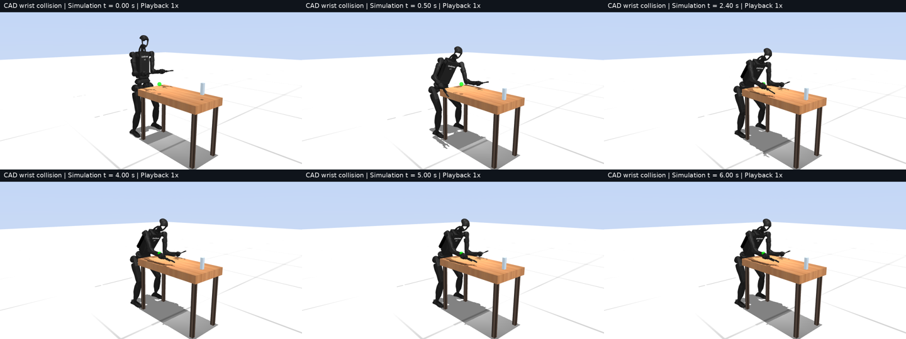

Research index · Measured 18 October 2026 · Checkpoint in progress
Replacing the wrist-pad box by its existing CAD collision mesh changes simulated table support by up to 23.57 N during a 6.02 s nominal rollout. Final reach error decreases from 17.60 to 14.69 mm. All seven wrist witnesses in the three saved design poses lie 8.64–23.52 mm from the wrist CAD surface. Geometry correction is therefore needed before wrist support can contribute to a selection score. Brace selection remains unfinished: this session used one of six rollouts and stopped at 80% five-hour usage.
A collision witness is the robot-side surface point reconstructed from MuJoCo’s contact midpoint, signed gap and normal. CAD distance is the shortest distance from that point to triangles on the same body, in millimetres. A usable point must be within 0.5 mm of CAD and within 25 degrees of an incident outward triangle normal. These tolerances come from the earlier catalogue; they are geometry assumptions. The region is an implicit union of qualifying surface points. No pad area, pressure capacity or torsional moment is assigned.
Table support is summed robot–table normal force, reconstructed every 20 ms during 4–6 s from saved position, velocity and actuator input. Reach error is distance from the reaching-hand point to its target. Joint tracking RMS is root mean square commanded-minus-measured joint position during 4–6 s. Loaded slip is maximum horizontal sole speed with normal load above 1 N in that interval. Solver p95 is the 95th percentile solve time against the 20 ms control period.
The region query uses body and collision-geom identity and retains every accepted witness and its lever arm. The small catalogue facets are not enlarged into load-bearing pads. Elbow witnesses lie on CAD. Most forearm witnesses pass; one capsule witness misses by 0.677 mm. Every saved wrist-box witness fails the distance test. The JSON records local points, normals, nearest triangles and the moment error from relocating a 100 N normal force to the old named site.
The three archived design poses have no closed floor witnesses. Their hard static equilibrium problems fail, so they cannot rank supported strategies. At the recorded 5 s dynamic poses, the elbow–forearm point-force model is feasible with 134.70 N baseline and 127.37 N corrected brace support. The forearm–wrist subset has zero closed brace witnesses and reduces to feet-only equilibrium. Its feasible feet solution cannot certify a wrist brace. These are saved-pose support calculations; the online controller uses the estimated-state path.
The falsifiable hypothesis was that replacing the wrist box would change reach or sole displacement by more than 5 mm, or hold support by more than 10 N. The measured support change passes that criterion. Only the plant’s named left wrist-pad geometry is replaced by the convex hull of the existing wrist CAD mesh. All other physics parameters and the original elbow–forearm controller remain. The model correction is opt-in. The full 35-node horizon, 0.02 s step and default_sense seed 17 observation path are preserved.
| Metric | Original box | CAD wrist collision |
|---|---|---|
| Final reach error (mm) | 17.60 | 14.69 |
| Minimum hold table support (N) | 183.35 | 187.18 |
| Hold joint tracking RMS (mrad) | 0.91 | 2.12 |
| Hold joint speed peak (rad/s) | 0.339 | 0.303 |
| Hold joint acceleration peak (rad/s²) | 164.78 | 171.32 |
| Solver p95 (ms) | 22.92 | 23.37 |
Startup joint speed remains 3.308 rad/s and acceleration 226.123 rad/s². Maximum sole displacement over the complete episode remains 18.80/29.91 mm for left/right feet. Loaded hold slip is 0.0020/0.0064 m/s in the baseline and 0.0036/0.0060 m/s with CAD wrist collision (left/right). Joint acceleration uses finite differences of measured velocity at 2 ms spacing. Predicted forearm normal force still reaches −3.59 N; the elbow force-cone row violation reaches 27.62 N across sampled prediction horizons. The unchanged planner therefore remains force-infeasible. Recovery is absent from this plan.
Each clip has 181 frames at 30 fps and lasts 6.033 s. The six-frame sequences were inspected at the displayed simulation times. Both remain braced through 6 s; force changes require the numerical measurements. The baseline is the archived nominal trajectory rendered again at 1x.

Six serial guarded jobs used 25.71 seconds, with peak RSS 2,965,648 KiB. The rollout used a 4.4 GB cap derived from the previous measured peak; geometry and rendering used 2.7–3 GB. One saved-state probe failed on a variable-name collision and was corrected without repeating the rollout. Resguard stayed at 213 events. Usage increased from 50% to 80%; this session finished before the ten-minute quota check and thirty-minute checkpoint deadline. Certified defaults, original site memberships, runner and queue were unchanged.
Wrist geometry affects simulation support. Selection benefit, a valid loaded wrist contact region, hardware loading capacity and recovery remain unmeasured. Hardware transfer requires wrist/forearm surface and pad measurements, friction/compliance, synchronized estimated state and actuator current/torque, and independent sole motion.
Five rollouts remain. Build and solve elbow–forearm and forearm–wrist plans with validated physical points, retain elbow–forearm as the fixed strategy, and freeze a score using feasible reach, positive support and joint-motion cost before comparing outcomes. Evaluate both strategies on a selection target and a target excluded from selection. A corrected wrist witness must pass CAD distance, normal and lever-arm checks before its force contributes. This work remains required; the current support-only calculations do not answer whether selection helps.
Metrics and decision record · Exact commands and resource record · Raw outputs and source archive · Validated catalogue